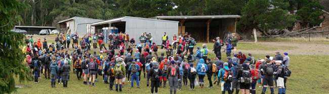
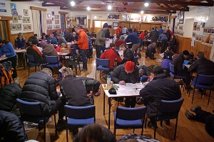
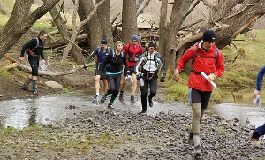
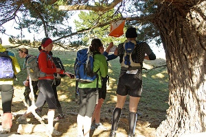
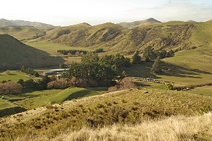

|
Heights of Winter 2012 'Cotswold' Saturday 30th June Organisers' Reflections - Dave Laurie |

I’m not sure whether it was a disappointment or a thrill for us planners to see Chris & Gregg come jogging in at 7.35pm having been to all controls. At least we knew they were all there and in the right places. How many more teams would come in having been around them all? Well thankfully no others and the 2nd team was some 140 points behind.

A big thank you to all the 420 people who took part in the 15th Heights of Winter Rogaine up at Omihi, North Canterbury last weekend. The biggest turn out we have had with many coming from the North Island, and other places in the South.
This year we were able to put together a great team of new planners/vetters so the whole process went very smoothly. From the initial two farms who offered to host the event we realized we needed a bigger area and so managed to bring in another 6 landowners, incorporating Mt. Vulcan which we have used before and farms on the south side of Reeces Rd. We were fortunate that Mike Stronach of Cotswold allowed us to use his woolshed area as that moved the Start/Finish close to the centre of the map.
The whole area proved much better than we had expected and many of the scrubby areas on the western part of the map had been cleared. Control locations were generally easier than previous years and there were more of them.

The weather was very good during the planning period so there were some very pleasant days spent out in the field.
Due to concerns about possible wet weather we made a decision to use the local hall for registration, planning and meals. As it turned out the weather on the day was great and we could have easily done everything at the Cotswold woolshed. It was still good to be back in the warm hall for the meal at 9.00pm with a good frost developing outside. A big thank you to the Omihi School parents who rose to the challenge of providing all 400+ of us with an excellent meal.
Car parking generated a bit of concern for the organizers firstly because of a possible clash with the local rugby and netball supporters and then the double up down at the Start/Finish area. However on the day things worked out very well. With an extra paddock to use we were able to separate the 6hr cars from the 12hr.
It was good to look at the flight plans and see the variety of routes teams had chosen to follow so it seems that there were a number of combinations of controls than caught the eye.
From our information there was only one injury noted, Steve John’s dislocated finger. His wife Lyn (a doctor) was able to get it back in place that evening.

The new Navlight punches worked very well and with rechargeable batteries should prove less problematic and more reliable than the previous version, which was prone to moisture problems particularly with some punches placed in the field 2 weeks before the event. Nice work Pete (Squires).
Congratulations to Chris Forne & Greig Hamilton for their great win and also to Trevor Voyce & Nathan Fa’avae in second place and Tim Farrant & JJ Wilson in third - Tim having recently moved up from the Junior grade. Well done Bernard Robinson, Sia Svendsen & Brent Edwards, the first mixed team in 4th place overall. Emma & Guy de Lacey had a good run coming in 20th and first Super Vet team.
Other category winners were Wendy van den Berg & Jodie Fa'avae (WO), Julie Gordon & Debbie Mansfield (WV), Matt Bixley & Robert Jarvis (MV), Jerry Sheppard & Jill Westenra (XV), Michael Wood & Gordon Balfour (MSV), and Josie Boland & Ket Bradshaw (WSV). Well done to Tarras Glover & Tom Goodman who won the MJ section.
The 6 hour event was won by Bruce Webster & Joe Jagusch and it was great to see over 200 competing in this event.
We would like to acknowledge the work put in by
- Bill Kennedy in making the base map, website and entry secretary,
- Jac Woudberg and Chrys Horn for setting up and operating Navlight,
- Grant Hunter for organizing catering, toilets, SAR, St John, traffic plan, and water stops,
- The Hurunui SAR team and St. John’s paramedics,
- Mondo, Val and Terry for collecting in controls,
- Helpers: Graham Garden, Clare McLennan,
- Caterers: Omihi School parents

Finally a big thank you to all the Landowners who allowed us
to roam their properties and enjoy their wonderful vistas.
Dave Laurie
and the Planning Team: Neil Charters, Francis Bodger, Penny Wright, Rex Williams, Dave Evans, Dave Laurie, Pete Squires, Andrew McGowan, Nicola & Mark Petty.